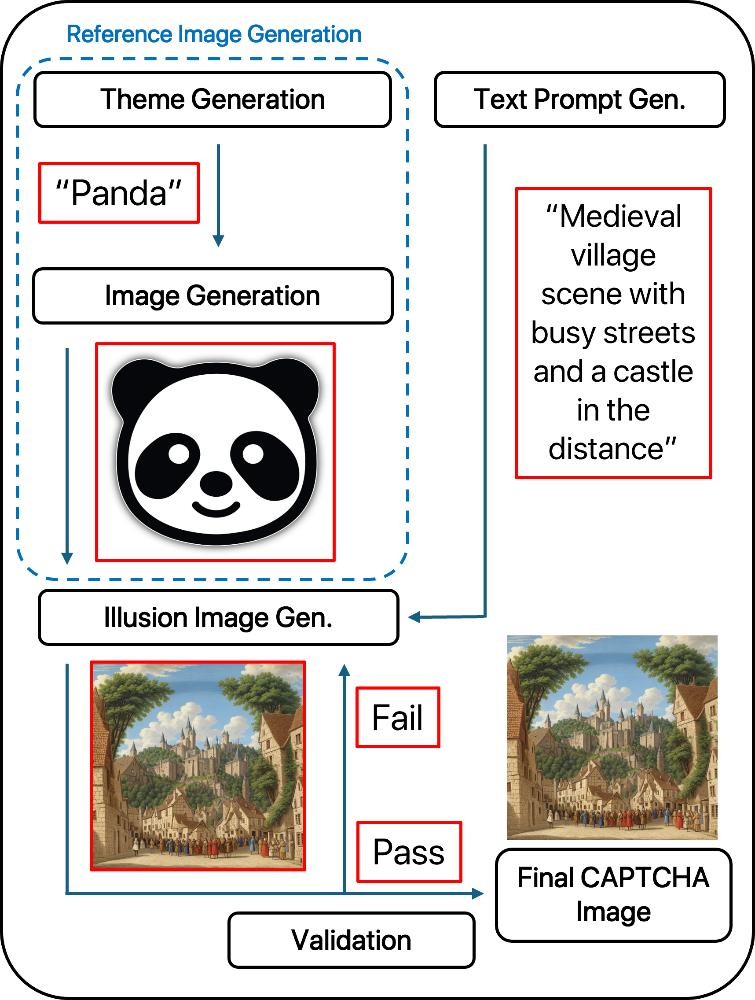

Generation Process
I-CAPTCHA utilizes gpt-4 to generate text prompts and Stable Diffusion (with ControlNet) to generate images. The generated CAPTCHA images are then validated by a VQA model to ensure it is resilient to AI detection.
Recently, serious security issues have risen due to the development of methods to bypass CAPTCHA by exploiting AIs. CAPTCHA, a test developed to prevent automated programs from accessing websites, is used to protect functions that should only be accessible to humans, such as online voting or registration. However, malicious use of advanced AI technologies to automatically bypass these CAPTCHAs are leading to unauthorized data collection through data crawlers, large-scale injection of malicious data, and etc. Therefore, this study presents a new CAPTCHA framework that uses optical illusions in images, which AI cannot decipher but humans can solve without any issues. AIs have been developed to the extent that they can understand and analyze not only the objects within an image but also the overall atmosphere and structure. To solve this issue, I have developed a CAPTCHA framework using optical illusions, different from conventional methods, and compared how both AI and humans solve it. As a result, it was confirmed that AI could not bypass the test, whereas humans passed it without significant difficulty. Thus, this study confirms that the novel CAPTCHA framework proposed effectively prevents unauthorized web access by AI and automated programs.
I-CAPTCHA utilizes gpt-4 to generate text prompts and Stable Diffusion (with ControlNet) to generate images. The generated CAPTCHA images are then validated by a VQA model to ensure it is resilient to AI detection.
To test the effectiveness of I-CAPTCHA, AI models including